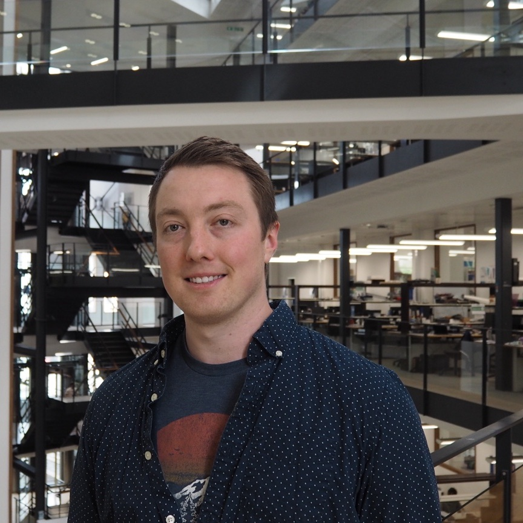

People building
new biology.

GROUP LEADER
Dr Ryan R. Cochrane
Ryan is a Bicentenary Early Career Research Fellow at the University of Manchester. His work spans synthetic genomics, bacteriophage engineering, large-DNA assembly and biological delivery.
Manchester Institute of Biotechnology · Faculty of Biology, Medicine and Health
The group is growing.
Future students, researchers and collaborators will be added here as the lab develops.
Future students, researchers and collaborators will be added here as the lab develops.